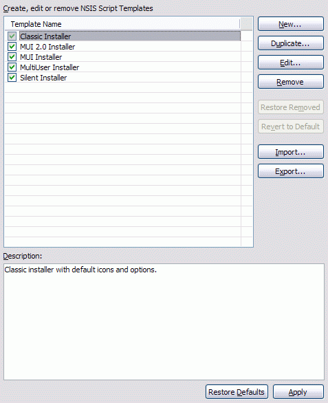

Script Templates
The Script Templates preference page is used to work with script templates. A script template is set of commonly used options while generating a script using the EclipseNSIS Script Wizard. There are three types of script templates:- Built-in: Script templates which are prepackaged along with the plugin.
- Custom: Built-in script templates which have been modified by the user.
- User-defined: Script templates which have been created by the user.

- Script Templates
- Displays the list of script templates. Only checked templates are enabled for use by the EclipseNSIS Script Wizard. To disable/enable a template uncheck/check the checkbox associated with it The following buttons allow manipulation and configuration of script templates. ← Back
- New
- Opens a dialog to create a new script template. ← Back
- Edit
- Opens a dialog to edit the currently selected script template. ← Back
- Remove
- Remove all selected script templates. ← Back
- Restore removed
- Restore any custom script templates removed during the current preferences editing session as long as the preferences have not yet been saved using the Apply or OK buttons.. ← Back
- Revert to default
- Revert all selected custom templates back to their original built-in states. ← Back
- Import
- Imports script templates from the file system. ← Back
- Export
- Exports all selected script templates to the file system. ← Back
- Description
- Displays the description of the selected script template. ← Back
Previous | Contents | Next
Copyright © 2004, 2005 Sunil Kamath (IcemanK).